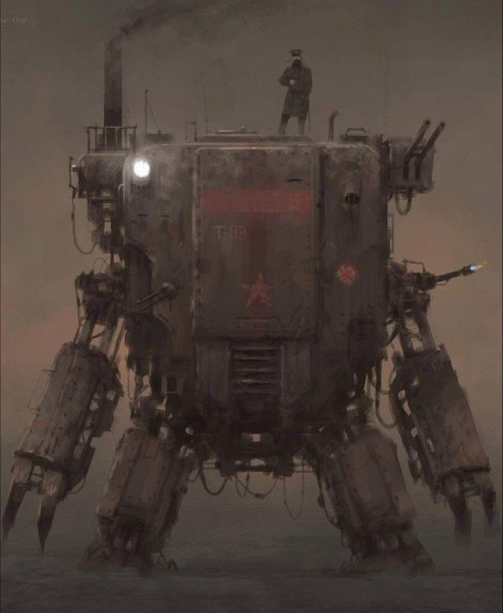
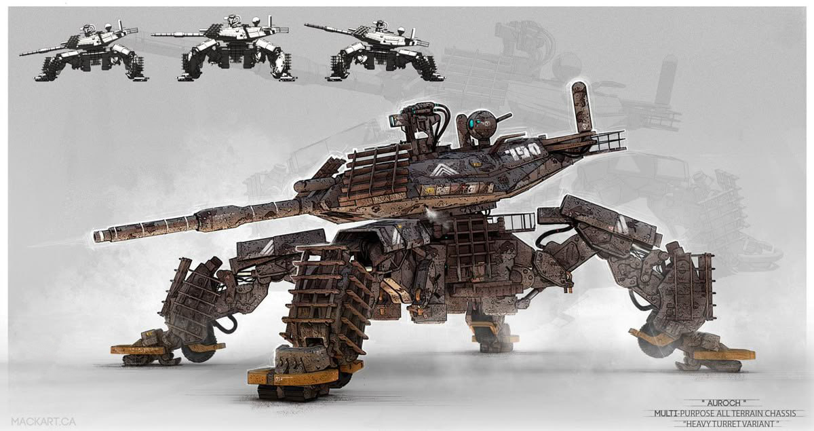
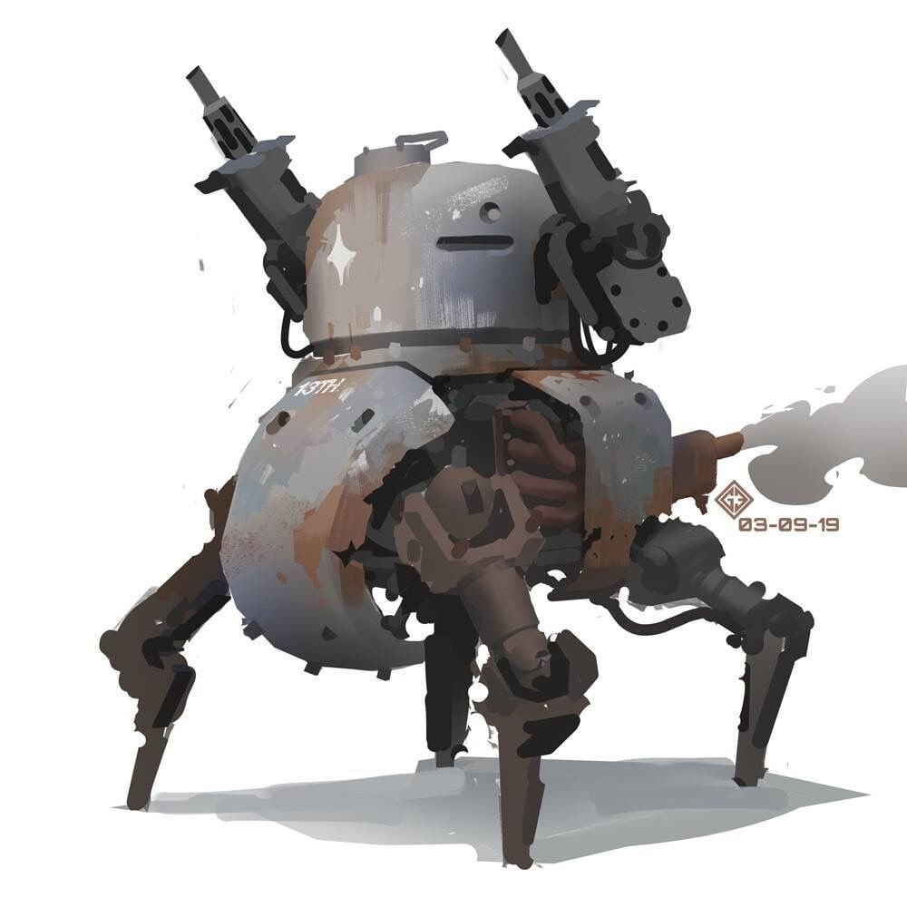

Автоматоны
В мире Воледиса автоматоны — это большие боевые машины, ударная сила армии. Размером они обычно от 2 до 4 метров, имеют мощное арканомеханическое оружие и встроенный органический интеллект.
В свою очередь органический интеллект это клетки созданные внутри ядра автоматона, формирующие своего рода простой мозг. Он получает информацию через своеобразное зрение и слух, эффективнее удалённого управления и может искать нестандартные решения.
Дуоподы
Дуоподы — это самый распространенный вид автоматонов. Они имеют две "ноги", универсальны. Размером зачастую в 3-4 метра. Они имеют 1-2 пушки, стреляющие огненными зарядами либо взрывными снарядами. Плохо справляются с укрепленными позициями, однако органично сочетаются с пехотой и достаточно быстры. Являются компромиссом мобильности и огневой мощи.
Конечно же модели разнятся от государства к государству. Альдренские дуоподы зачастую мелкие и подвижные, а вот альборейские наоборот крупные и ставка идёт на их прочность и огневую мощь. Лучшим примером является D.P. Verrat IV с короткими ногами, двумя мощными руками для защиты в ближнем бою и сразу несколькими орудиями для стрельбы по большой толпе.
Триподы
Триподы имеют три или шесть “ног", которые часто больше походят на лапы паука. Размером зачастую в 2-3 метра. Они имеют несколько пушек, корпус их лёгкий и автоматон этот очень быстрый. Он используется для быстрых атак и захвата территории, в операциях и попытках зайти в тыл врага. Распространён в альдренской школе войны, а в альборейской встречается наоборот редко.
Примером современной модели является альдренский T.P. Spinne II. Он имеет шесть ног, больший органический интеллект чтобы разрешать нестандартные ситуации в процессе операции и множество орудий с улучшенной системой прицеливания. Однако трипод не предназначен для массовых постоянных боёв, и его крепкость и выносливость в разы уступает тому же вышеупомянутому D.P. Verrat IV.

Квадроподы
Квадропод, как не сложно догадаться, имеет четыре “ноги" и служит тяжелым оружием для штурма и прорыва укрепленных позиций врага. Имеет самый большой размер, 4-5 метров. Зачастую имеет одно или максимум два орудия, однако они бьют по большой площади и имеют огромную разрушительную силу.
Самые мощные квадроподы, конечно, создают в Альборее. Примером такого может стать Q.P. Poing VII. Эта седьмиметровая махина медлительна и не имеет развитого органического интеллекта, а также имеет лишь одно орудие, однако какое - с уникальной системой геостазийного взрыва. Крупный металлический снаряд, созданный магией земли, с помощью реакций маны пневмы, потока и акселерации а также зелий разгоняется до скоростей 12-15 м/с чтобы в конце концов в полете полностью быть остановленным реакцией геостазиса. Вся энергия тут же освобождается и вызывает огромные разрушения.
М-поды
М-поды являются полностью экспериментальными моделями, разработанными для поддержки пехоты огневой мощью. В отличии от старших собратьев, они обладают размером около 1 метра, а их оружие не сильно превосходит то, что может нести обычный солдат. Однако они одновременно и крепки, и мобильны. Тем не менее, найти им применение в бою которое бы покрыло их стоимость сложно. Примером м-пода является альборейский M.P.Bébé II.
